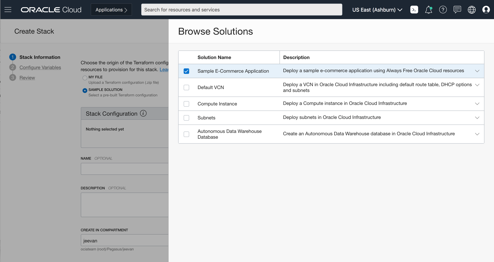
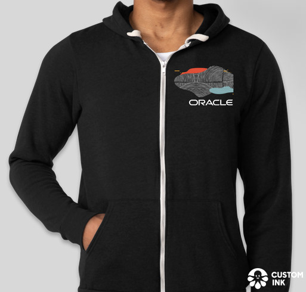
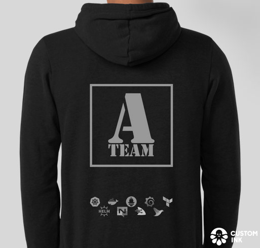

05 May 2020
Bird’s Eye View
- Usage and adoption continue to be strong for MuShop
- Establishing strong relationships across OCI PMs
- Repeated exposure from enablement and evangelists
- Most of all repositories in
oracle-quickstart
{kind=link}
{kind=link}
- Efficient code review/contribution throughput:
{kind=link}
Features
Application
{kind=link}
Workshop
Cloud Shell
Replace user-specific/machine requirements with Cloud Shell
Practicals
Extensive conceptual background, and beginner exercises
New Content
New labs for cluster maintenance, helm, functions
Support
Dedicated setup -> deployment support content
Audience
Multi-participant/shared cluster considerations
Telety
Directly integrated telety.io host/particpant widget
Free Hands-On
Internal Activities
ORM Engineering
-
Developing the MuShop complete stack exposed several issues within ORM, leading to rapid resolution through engineering collaboration with A-Team.
-
The new Resource Manager Solution Hub feature allows customers to quickly get started with complete reference solutions on OCI. IT launched with MuShop as the first complete stack:

OCI Console
ConsoleHUB Training
Training- Multiple training sessions conducted for Austin Hub Solution Engineering in lieu of the on-site workshop
- Training delivered across two independent teams
- Goal is to make teams self-sufficient consumers of the application and reference materials
- Continuing training delivery
07 May 2020
Sales Central
Sales CentralVideo recordings on sales central using MuShop reference architectures
Autonomous Database
Cart ServiceAutonomous Database team contributions are active
- Autonomous Database moved to new binary JSON storage requiring JDBC 19.6 upgrade
- As of
28 Apr 2020SODA collections on newly provisioned instances now use binary storage only - This change doesn’t impact 18c with recent jars
jdbc/sodaand will continue to function on older releases
In Flight/Future
- Mini Labs: Utilize GitHub documentation (
@here) for developing concise labs from MuShop concepts/workshop materials - IDCS: Security A-Team developing integration to
userservice utilizingopenid-connectstrategy - HPC: Engineering team looking to make a certifcation for HPC, which may include the MuShop deployment
- ODF/ODS: Solution design and implementation details ready for Big Data/Data Science showcase
Just for Fun
- 
- 